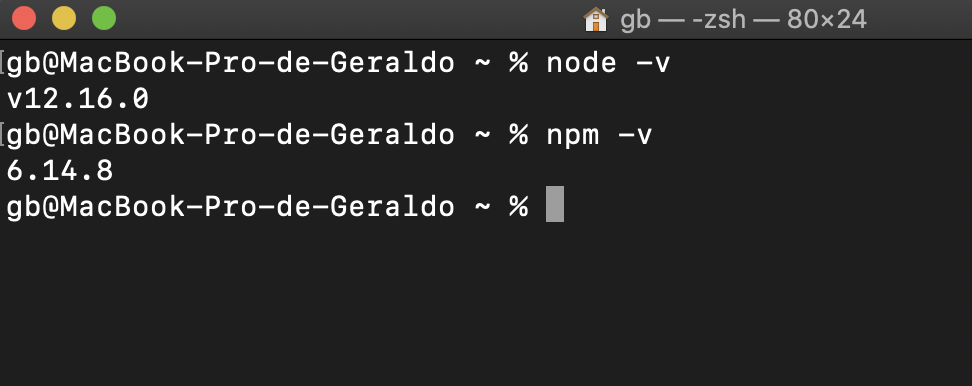
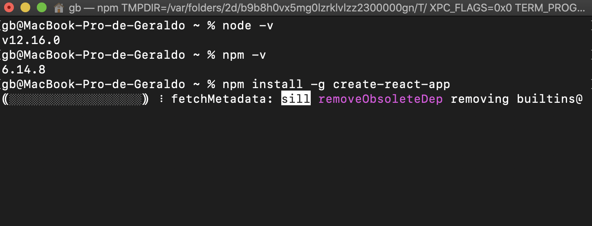
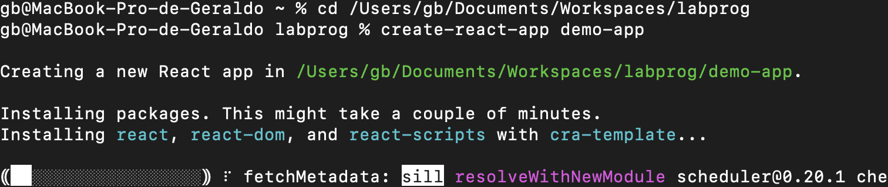
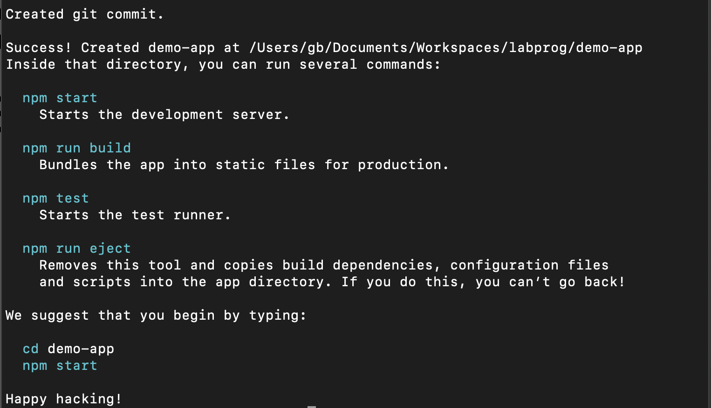
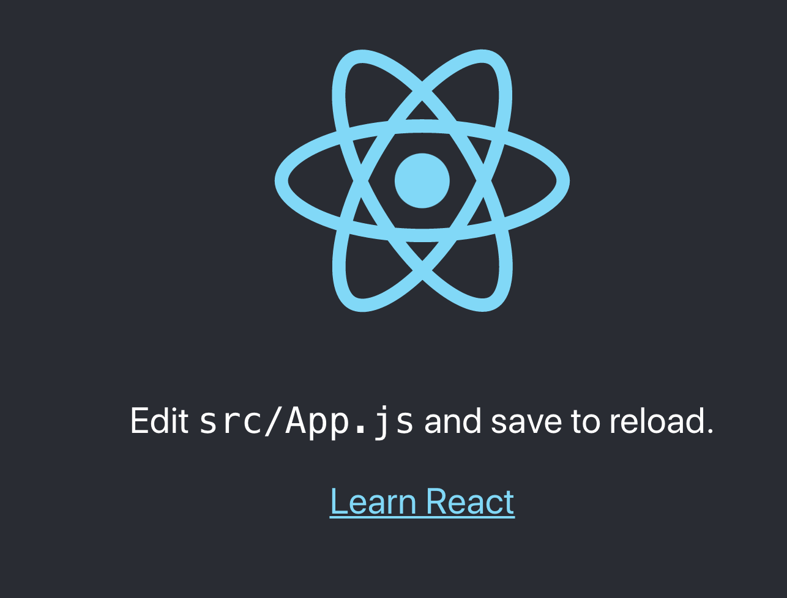
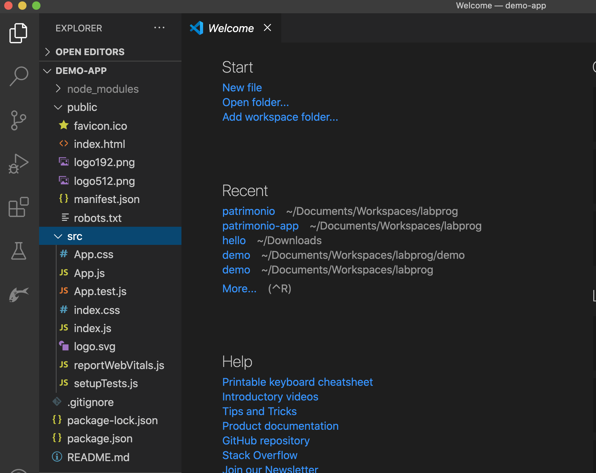

name: inverse class: center, middle, main-title # Introdução ao React.js Laboratório de Programação <img src="react.png"> --- # O que é? - Framework Javascript desenvolvido pelo Facebook <a href="https://pt-br.reactjs.org/">https://pt-br.reactjs.org/</a> - concorrente do AngularJS - Diferença em relação ao AngularJs: > Usa o modelo Flux ao invés do MVC - Tende a ser de simples aprendizado - Doc: <a href="https://react.dev/learn"> React.js Getting Started</a> --- # Flux - Arquitetura desenvolvida pelo Facebook para desenvolver aplicações no lado do cliente - Organizada em 3 elementos: - Dispatcher, Store, Views <center> <img src="hZQF2.png"> </center> --- # Flux <center> </center> - Dispatcher: responsável por executar ações que envolvam o servidor - Store: matém o estado da aplicação - Views: componentes resposáveis pela renderização de informação > a ideia é que o ciclo continue para manter a integridade da arquitetura como um todo - Doc: <a href="https://facebook.github.io/flux/">Flux: Application architecture for building user interfaces</a> --- # + Características - Gerencia automaticamente seu estado e atualizações de interface - Quando ocorre mudança em dados, o React automaticamente renderiza os componentes ligados - "Componentização" dos elementos de interface - legal poder reutilizar código - Componentização de estruturas JSX - legal por poder usar herança, ... - Single Page Application - JSX -> extensão de javascript: DOC: <a href="https://reactjs.org/docs/introducing-jsx.html">Introducing JSX</a> --- name: inverse class: center, middle, main-title # Montando o ambiente e criando o primeiro projeto Mãos a obra! --- #Pré-Requisitos: - <a href="https://nodejs.org/en/download/"> Node.js (precisa ser instalado) </a> - Servidor para javascript - já vem com o gerenciador de pacotes, npm - para testar instalação digite `node -v` num terminal <center>  </center> --- #Pré-Requisitos: - instale via node.js o `create-react-app` > npm install -g create-react-app <center>  </center> --- #Criando a aplicação react > `cd` na pasta que queira criar a aplicação > `create-react-app` demo-app - Atenção: aguarde ele baixar as dependências <center>  </center> --- #Criando a aplicação react <center>  </center> --- #Colocando para rodar: - Entre na pasta do projeto: `cd demo-app` - Use `npm start` - Ele disponibiliza um endereço web. Por padrão <a href="http://localhost:3000/"> http://localhost:3000/</a> <center>  </center> --- #Abrindo no VS Code - Basta abrir a pasta do projeto - Navegue pelo projeto! <center>  </center> --- name: inverse class: center, middle, main-title # Criando o primeiro componente hello world --- # Componenete no React - `function` - inclua `export default` para publicar - `return` indica como o componente será renderizado ```JSX export default function Hello() { return ( <div> <label>Hello!</label> </div> ); } ``` --- # Componenete no React - Adicione o compoenente no `index.js` DE: ```JSX root.render( <React.StrictMode> <App /> </React.StrictMode> ); ``` Para: ```JSX root.render( <React.StrictMode> <Hello /> </React.StrictMode> ); ``` --- #Agora basta olhar o index.html no endereço > localhost:3000 - lembre-se que vc tem que ter efetuado `npm start` antes --- #Variáveis - Você pode declarar variáveis ```JSX const user = { name : 'Geraldo' } ``` - e usá-las dentro do código com `{ variável }` ```JSX const user = { name : 'Geraldo' } export default function Hello() { return ( <div> <label>Hello {user.name}!</label> </div> ); } ``` --- #Lidando com listas - basicamente a lista é construída como um vetor JSON ```JSX const producao = [ {id: 1, titulo:'Artigo 1'}, {id: 2, titulo:'Artigo 2'}, {id: 3, titulo:'Artigo 3'}, ]; ``` - use `map` para interar nos elementos e construir o componente: ```JSX export default function Listas() { const lstItens = producao.map (producao => <li key={producao.id}> {producao.titulo} </li> ) return ( <ul>{lstItens}</ul> ); } ``` --- ##Exemplo similar para Tabela ```JSX const producao = [ {id: 1, titulo:'Artigo 1'}, {id: 2, titulo:'Artigo 2'}, {id: 3, titulo:'Artigo 3'}, ]; export default function Tabela() { const lstItens = producao.map (producao => <tr> <td>{producao.id}</td> <td>{producao.titulo}</td> </tr> ) return ( <table> <tr> <th>ID</th> <th>Título</th> </tr> {lstItens} </table> ); } ``` --- ##Tabela com click - Para capturar o evento do click, vamos criar uma função `handleClick` ```JSX function handleClick(indice) { alert('Você clicou!'); } ``` - No botão basta ser: ```JSX <button onClick={handleClick}>Botão</button> ``` - Não se pode passar parâmetro dessa maneira, senão fica num loop - <b>Mas, e se quiser receber um parâmetro? Use uma função arrow `() =>`</b> ```JSX function handleClick(indice) { alert('Você clicou no ID=' + indice); } ... <button onClick={ () => handleClick(producao.id)}>Ação</button> ... ``` --- ##Tabela com click ```JSX const producao = [ {id: 1, titulo:'Artigo 1'},{id: 2, titulo:'Artigo 2'},{id: 3, titulo:'Artigo 3'}, ]; export default function Click() { function handleClick(indice) { alert('Você clicou no ID=' + indice); } const lstItens = producao.map (producao => <tr> <td>{producao.id}</td> <td>{producao.titulo}</td> <td> <button onClick={ () => handleClick(producao.id)}>Ação</button> </td> </tr> ) return ( <table> <tr><th>ID</th><th>Título</th><th>Click</th> </tr> {lstItens} </table> ); } ``` --- #State - O react fornece mecanismo de estado e gerencimento de variáveis - Para utilizar você precisa: - importar `import { useState } from 'react';` - e declarar o estado `const [count, setCount] = useState(0);` ```JSX import { useState } from 'react'; export default function Estado() { const [num1, setNum1] = useState(0); const [num2, setNum2] = useState(0); const [soma, setSoma] = useState(0); ``` - `num1`, `num2`, ... são estados e podem ser obtidos por `{num1}` - `setNum1`, `setNum2`, ... são funções para ajuste de valor - `useState` é uma função `hook` definida no React. Outros: <a href="https://react.dev/reference/react"> API Hooks</a> --- #State - Você pode associar o estado a um componente: ```JSX <input type='text' onChange={e => setNum1(e.target.value)}></input> ``` - Use a função `arrow` para coletar o evento `e` ao modificar o valor via `onChange` - `setNum1` é a função disponibilizada pelo estado acima --- #State - Podemos adicionar ações como subfunções: ```JSX function somar() { setSoma(Number(num1)+Number(num2)); } ``` - `setSoma` é a atualização do estado - `Number(num1)` converter string -> número - Quando a função é chamada no react, ela não recebe parâmetro ```JSX <button onClick={somar}>Somar</button> ``` --- ##State - Completo ```JSX import { useState } from 'react'; export default function Estado() { const [num1, setNum1] = useState(0); const [num2, setNum2] = useState(0); const [soma, setSoma] = useState(0); function somar() { setSoma(Number(num1)+Number(num2)); } return ( <div> <label>Num1:</label> <input type='text' onChange={e => setNum1(e.target.value)}></input> <label>Num2:</label> <input type='text' onChange={e => setNum2(e.target.value)}></input> <br></br> <button onClick={somar}>Somar</button> <br></br> <label>Resultado:{soma}</label> </div> ); } ``` --- #Props - É possível passar informações para o componente por `props` ```JSX function Campo ({ value }) { return ( <> <label>{value}</label> <br></br> </> ); } ``` - onde é informado via: ```JSX <Campo value = "Digite algo:"/> ``` --- #Props ```JSX import { useState } from 'react'; export default function Props() { const [texto, setTexto] = useState(""); return ( <div> <Campo value = "Digite algo:"/> <input type='text' onChange={e => setTexto(e.target.value)}></input> <Campo value={texto}/> </div> ); } function Campo ({ value }) { return ( <> <label>{value}</label> <br></br> </> ); } ``` --- name: inverse class: center, middle, main-title # Exemplo `Thinking in React` --- # Thinking in React - Exemplo de filtragem de conteúdo numa tabela <center> <img width="300" src="https://react.dev/images/docs/s_thinking-in-react_ui.png"/> </center> - Disponível completo em: <a href="https://react.dev/learn/thinking-in-react">Link</a> --- # Passos: Dado que recebeu o seguinte JSON de resultado: ```JSON [ { category: "Fruits", price: "$1", stocked: true, name: "Apple" }, { category: "Fruits", price: "$1", stocked: true, name: "Dragonfruit" }, { category: "Fruits", price: "$2", stocked: false, name: "Passionfruit" }, { category: "Vegetables", price: "$2", stocked: true, name: "Spinach" }, { category: "Vegetables", price: "$4", stocked: false, name: "Pumpkin" }, { category: "Vegetables", price: "$1", stocked: true, name: "Peas" } ] ``` - 1) Transforme a interaface em componentes - 2) Construa uma versão estática - 3) Defina a representação do estado - 4) Construa as funcionalidades do estado nos componentes --- # 1) UI para componentes <center> <img width="700px" src="https://react.dev/images/docs/s_thinking-in-react_ui_outline.png"/> </center> Hierarquia: FilterableProductTable (SearchBar, ProductTable (ProductCategoryRow, ProductRow)) --- # 2) Versão Estática ```JSX function ProductCategoryRow({ category }) { return ( <tr> <th colSpan="2"> {category} </th> </tr> ); } ``` --- # 2) Versão Estática ```JSX function ProductRow({ product }) { const name = product.stocked ? product.name : <span style={{ color: 'red' }}> {product.name} </span>; return ( <tr> <td>{name}</td> <td>{product.price}</td> </tr> ); } ``` --- # 2) Versão Estática ```JSX function ProductTable({ products }) { const rows = []; let lastCategory = null; products.forEach((product) => { if (product.category !== lastCategory) { rows.push( <ProductCategoryRow category={product.category} key={product.category} /> ); } rows.push( <ProductRow product={product} key={product.name} /> ); lastCategory = product.category; }); ... ``` --- # 2) Versão Estática ```JSX return ( <table> <thead> <tr> <th>Name</th> <th>Price</th> </tr> </thead> <tbody>{rows}</tbody> </table> ); } ``` --- # 2) Versão Estática ```JSX function SearchBar() { return ( <form> <input type="text" placeholder="Search..." /> <label> <input type="checkbox" /> {' '} Only show products in stock </label> </form> ); } ``` --- # 2) Versão Estática ```JSX function FilterableProductTable({ products }) { return ( <div> <SearchBar /> <ProductTable products={products} /> </div> ); } ``` ```JSX export default function App() { return <FilterableProductTable products={PRODUCTS} />; } ``` --- # 3) Definindo os estados - Quais dados são estado ou propriedades? - Estados quando sofrem modificações - Estados relacionados a UI - O texto da busca - O valor do checkbox --- # 4) Implementando os estados - Os estados ficam em `FilterableProductTable` por ser hierarquicamente o agregador ```JSX function FilterableProductTable({ products }) { const [filterText, setFilterText] = useState(''); const [inStockOnly, setInStockOnly] = useState(false); ... ``` --- # 4) Implementando os estados - Os estados podem ser passados por `props` para os demais componentes: ```JSX function FilterableProductTable({ products }) { const [filterText, setFilterText] = useState(''); const [inStockOnly, setInStockOnly] = useState(false); return ( <div> <SearchBar filterText={filterText} inStockOnly={inStockOnly} onFilterTextChange={setFilterText} onInStockOnlyChange={setInStockOnly} /> <ProductTable products={products} filterText={filterText} inStockOnly={inStockOnly} /> </div> ); } ``` --- ## 4) Implementando os estados - Você deve atualizar os subcomponentes para refletir a nova situação ```JSX function ProductTable({ products, filterText, inStockOnly }) { const rows = []; let lastCategory = null; products.forEach((product) => { if (product.name.toLowerCase().indexOf(filterText.toLowerCase()) === -1) { return; } if (inStockOnly && !product.stocked) { return; } if (product.category !== lastCategory) { rows.push( <ProductCategoryRow category={product.category} key={product.category} />); } rows.push( <ProductRow product={product} key={product.name} />); lastCategory = product.category; }); .... } ``` --- ## 4) Implementando os estados - Você deve atualizar os subcomponentes para refletir a nova situação ```JSX function SearchBar({ filterText, inStockOnly, onFilterTextChange, onInStockOnlyChange }) { return ( <form> <input type="text" value={filterText} placeholder="Search..." onChange={(e) => onFilterTextChange(e.target.value)} /> <label> <input type="checkbox" checked={inStockOnly} onChange={(e) => onInStockOnlyChange(e.target.checked)} /> {' '} Only show products in stock </label> </form> ); } ```